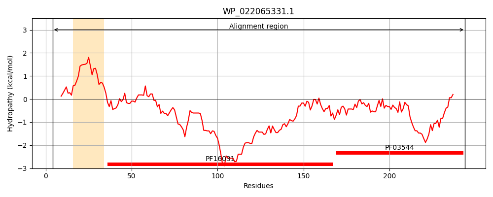
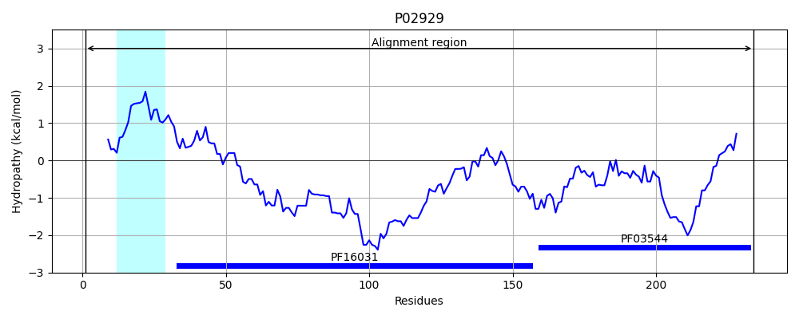
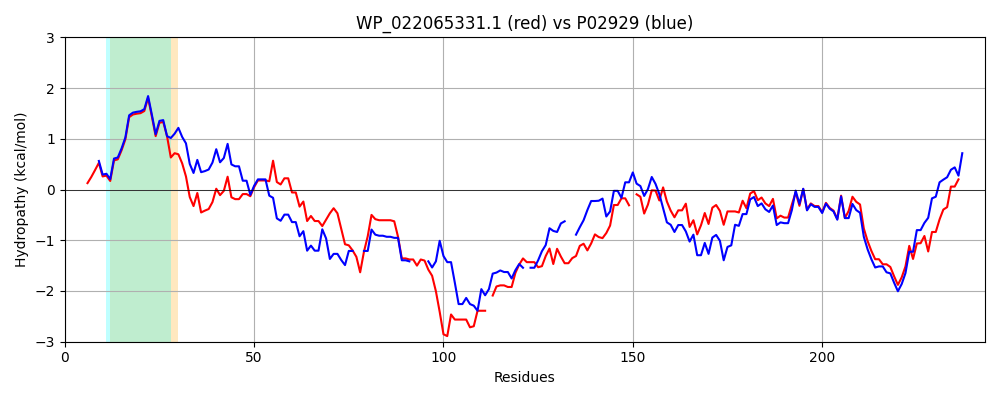

Hit Accession: P02929
Hit TCID: 2.C.1.1.1
Hit Description: gnl|BL_ORD_ID|8235 gnl|TC-DB|P02929|2.C.1.1.1 TONB PROTEIN - Escherichia coli.
Mach Len: 243
e:0.000000
Query TMS Count : 1
Hit TMS Count: 1
TMS-Overlap Score: 0.850000
Predicted Substrates:None
BLAST Alignment:
Score: 916 , Bit scores: 357 bits, E-value: 2.6e-126, Alignment length: 243, Percentage identity: 75
Query: 4 MTLDLPRRFPWPTLLSVAIHGAVVAGLLYTSVHQVIEQPSPTQPIEITMVAPADLEPPPAAQPVVEPVVEPDPEPEPEVVPEPPKEAPVVIHKPEPKPKPKPKPKPKPEKKV-EQPKRDVKPAAEPRPASPFENNNTTPARTAPSTSTAA-AKPTVTAPSGPRAISRVQPTYPARAQALRIEGTVRVKFDVTPDGRIDNLQILSAQPANMFEREVKSAMRRWRYEQARPGTGVTMTIKFRLSG 244
MTLDLPRRFPWPTLLSV IHGAVVAGLLYTSVHQVIE P+P QPI +TMV PADLEPP A QP EPVVEP+PEPEP +PEPPKEAPVVI KPKPKPKPKPKP KKV EQPKRDVKP E RPASPFE NT PAR ST+TAA +KP + SGPRA+SR QP YPARAQALRIEG V+VKFDVTPDGR+DN+QILSA+PANMFEREVK+AMRRWRYE +PG+G+ + I F+++G
Sbjct: 1 MTLDLPRRFPWPTLLSVCIHGAVVAGLLYTSVHQVIELPAPAQPISVTMVTPADLEPPQAVQPPPEPVVEPEPEPEP--IPEPPKEAPVVIE----KPKPKPKPKPKPVKKVQEQPKRDVKP-VESRPASPFE--NTAPARLTSSTATAATSKPVTSVASGPRALSRNQPQYPARAQALRIEGQVKVKFDVTPDGRVDNVQILSAKPANMFEREVKNAMRRWRYEPGKPGSGIVVNILFKING 234 | Protein Hydropathy Plots: |
|---|
|  |  |
Pairwise Alignment-Hydropathy Plot:
|
|---|
|  |